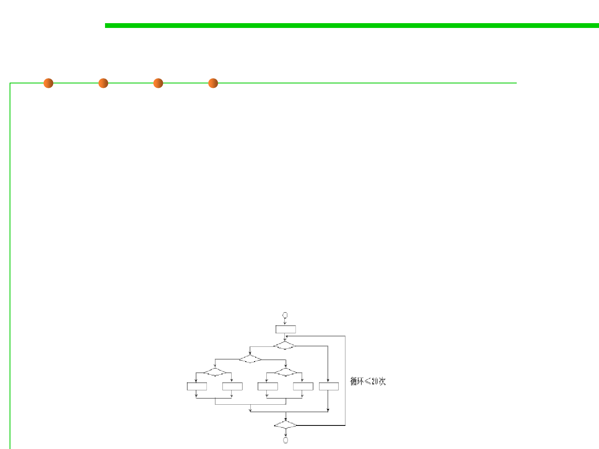

Code coverage
7.5 Testing and Test-First Programming
▪ The most thorough white-box method is to cover every path in the
program, but because the program generally contains a loop, so the
number of paths is great.
▪ It is almost impossible to execute every path, and we can only try to
ensure that the coverage is as high as possible.
▪ An example:
– A program contains a loop that needs to be executed 20 times. It includes
520 different execution paths. Supposing that it takes 1 ms to test each path,
it will take 3170 years to finish testing all the paths.